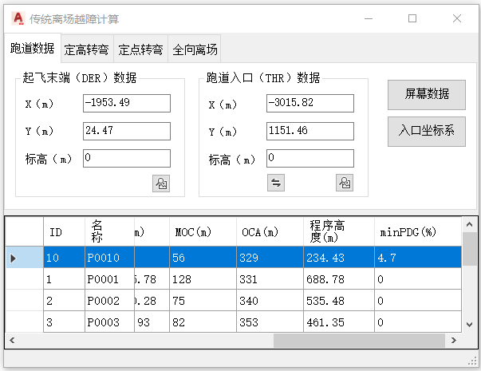
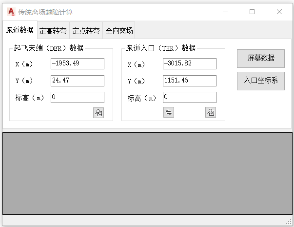
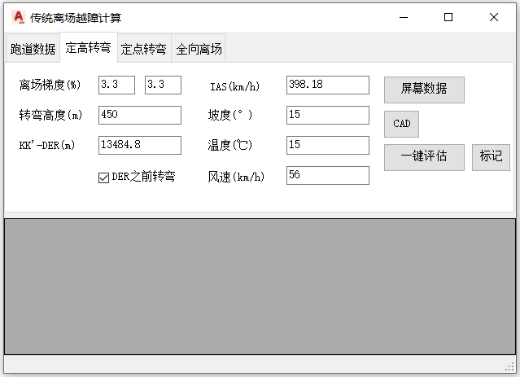
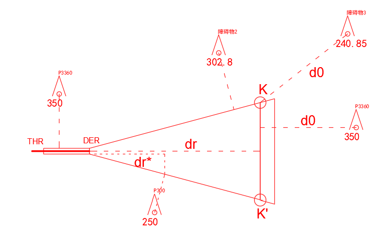
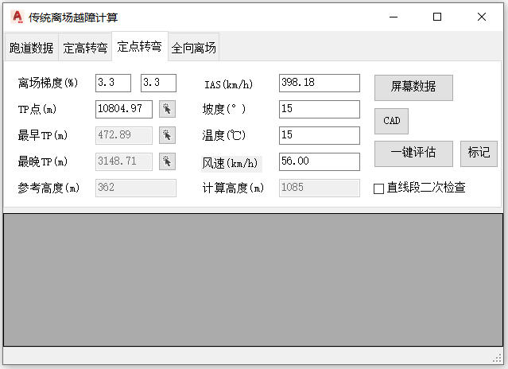
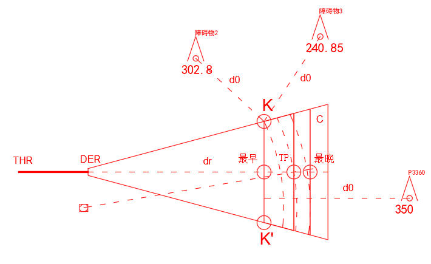
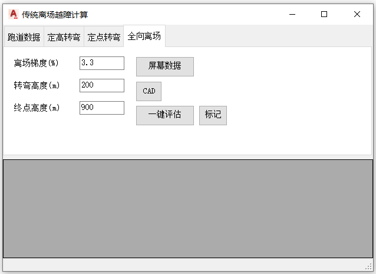
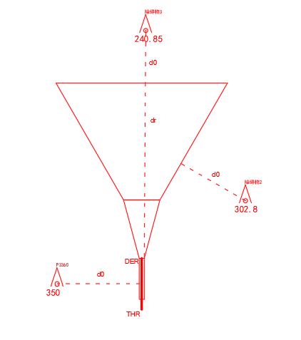

功能简介
【离场越障评估】用于绘制并评估离场（Departure）保护区。提供“定高转弯”“定点转弯”和“全向离场”三种模式，支持 DER 之前转弯、直线段二次检查，并可评估障碍物导致的离场梯度。
界面预览

公共元素：障碍物列表与通用操作
窗口下半部为障碍物列表，状态栏显示提示信息。各选项卡共用的按钮：
| 按钮 | 功能 |
|---|---|
| 【屏幕数据】 | 拾取当前屏幕中的所有点实体（障碍物），读取名称、坐标、高度并填入下方列表。 |
| 【一键评估】 | 按当前选项卡模式计算离场保护区，并逐个评估障碍物对应的离场梯度，结果列入障碍物列表。 |
| 【CAD】 | 在图中绘制离场保护区。 |
| 【标记】 | 将列表中选中的障碍物以图块形式标记到图中（含高度属性）。 |
通用操作步骤
- 命令行输入
Y07_离场保护区打开窗口。 - 在“跑道数据”选项卡填入 DER / THR 数据（可用拾取按钮、【入口坐标系】【屏幕数据】）。
- 切换到“定高转弯”“定点转弯”或“全向离场”，设置该模式参数。
- 【一键评估】检查穿透 →【CAD】绘制 /【标记】标注障碍物。
联动：在障碍物列表中单击某行，图纸会自动高亮并居中显示该障碍物。
选项卡一：跑道数据
界面截图

参数说明
| 控件 | 默认值 | 说明 |
|---|---|---|
| 起飞末端（DER）X / Y (m) | 0 / 0 | DER 在用户坐标系中的坐标；点右侧图标按钮可在图中拾取跑道末端点自动填入。 |
| 起飞末端（DER）标高(m) | 0 | DER 标高。 |
| 跑道入口（THR）X / Y (m) | -3000 / 0 | THR 坐标；点图标按钮可在图中拾取跑道入口点；【交换跑道方向】按钮可互换 DER / THR 数据。 |
| 跑道入口（THR）标高(m) | 0 | THR 标高。 |
按钮功能
| 按钮 | 功能 |
|---|---|
| 【屏幕数据】 | 拾取屏幕中的障碍物点，读取名称、坐标、高度填入障碍物列表。 |
| 【入口坐标系】 | 将已拾取的障碍物坐标换算到以跑道入口为原点的坐标系并更新列表。 |
选项卡二：定高转弯
界面截图

参数说明
| 控件 | 默认值 | 说明 |
|---|---|---|
| 离场梯度(%)（左 / 右） | 3.3 / 3.3 | 左框为直线段梯度，右框为转弯区梯度。 |
| 转弯高度(m) | 300 | 到达该高度后开始转弯。 |
| KK'-DER(m) | 8939.39 | KK′ 线（定位容差最早点）至 DER 的距离。 |
| DER之前转弯 | 关 | 勾选后按“在 DER 之前开始转弯”的模式计算保护区。 |
| IAS(km/h) | 380 | 表速；点左侧标签可勾选 / 取消参与计算。 |
| 坡度(°) | 15 | 转弯坡度。 |
| 温度(℃) | 15 | 用于真空速换算。 |
| 风速(km/h) | 56 | 最大风速；点左侧标签可勾选 / 取消参与计算。 |
按钮功能
| 按钮 | 功能 |
|---|---|
| 【屏幕数据】 | 拾取屏幕障碍物填入列表。 |
| 【CAD】 | 绘制定高转弯离场保护区。 |
| 【一键评估】 | 计算保护区并评估障碍物穿透。 |
| 【标记】 | 将选中障碍物以图块标记到图中。 |
应用效果

选项卡三：定点转弯
界面截图

参数说明
| 控件 | 默认值 | 说明 |
|---|---|---|
| 离场梯度(%)（左 / 右） | 3.3 / 3.3 | 左框为直线段梯度（修改后自动刷新参考高度），右框为转弯区梯度。 |
| TP点(m) | 8939.39 | 转弯点（TP）至 DER 的距离；点旁侧图标按钮可在跑道延长线上拾取 TP 点自动计算。 |
| 最早TP(m) | 600 | 定位容差最早点（KK′）至 TP 的距离；由拾取按钮自动计算，不可手输。 |
| 最晚TP(m) | 600 | 定位容差最晚点（C）至 TP 的距离；由拾取按钮自动计算，不可手输。 |
| 参考高度(m) | 300 | 按直线段梯度推算的 TP 处参考高度（TP距离 × 梯度 + DER标高 + 5）。 |
| 计算高度(m) | 899 | 实际采用的转弯计算高度（TP距离 × 10% + DER标高 + 5）。 |
| IAS(km/h) / 坡度(°) / 温度(℃) / 风速(km/h) | 380 / 15 / 15 / 56 | 转弯参数；IAS 与风速可点左侧标签勾选 / 取消。 |
| 直线段二次检查 | 关 | 勾选后对直线段保护区再做一次穿透检查。 |
按钮功能
| 按钮 | 功能 |
|---|---|
| 【屏幕数据】 | 拾取屏幕障碍物填入列表。 |
| 【CAD】 | 绘制定点转弯离场保护区。 |
| 【一键评估】 | 计算保护区并评估障碍物穿透。 |
| 【标记】 | 将选中障碍物以图块标记到图中。 |
| TP / KK′ / C 旁图标按钮 | 在跑道延长线上依次拾取转弯点、定位容差最早点、最晚点，自动计算对应距离。 |
应用效果

选项卡四：全向离场
界面截图

参数说明
| 控件 | 默认值 | 说明 |
|---|---|---|
| 离场梯度(%) | 3.3 | 全向离场面梯度（PDG）。 |
| 转弯高度(m) | 200 | 允许开始转弯的高度（TNA）。 |
| 终点高度(m) | 900 | 保护区计算终点高度。 |
按钮功能
| 按钮 | 功能 |
|---|---|
| 【屏幕数据】 | 拾取屏幕障碍物填入列表。 |
| 【CAD】 | 绘制全向离场保护区。 |
| 【一键评估】 | 计算保护区并评估各方向障碍物穿透。 |
| 【标记】 | 将选中障碍物以图块标记到图中。 |
应用效果
